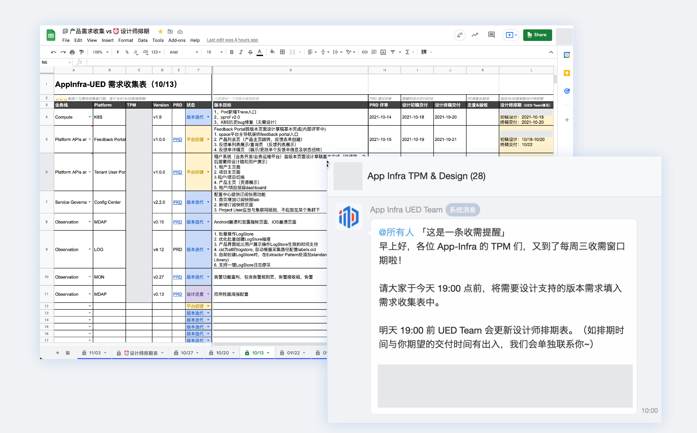
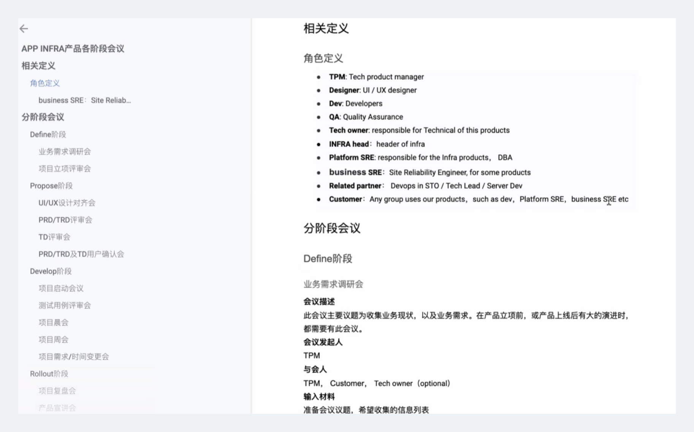
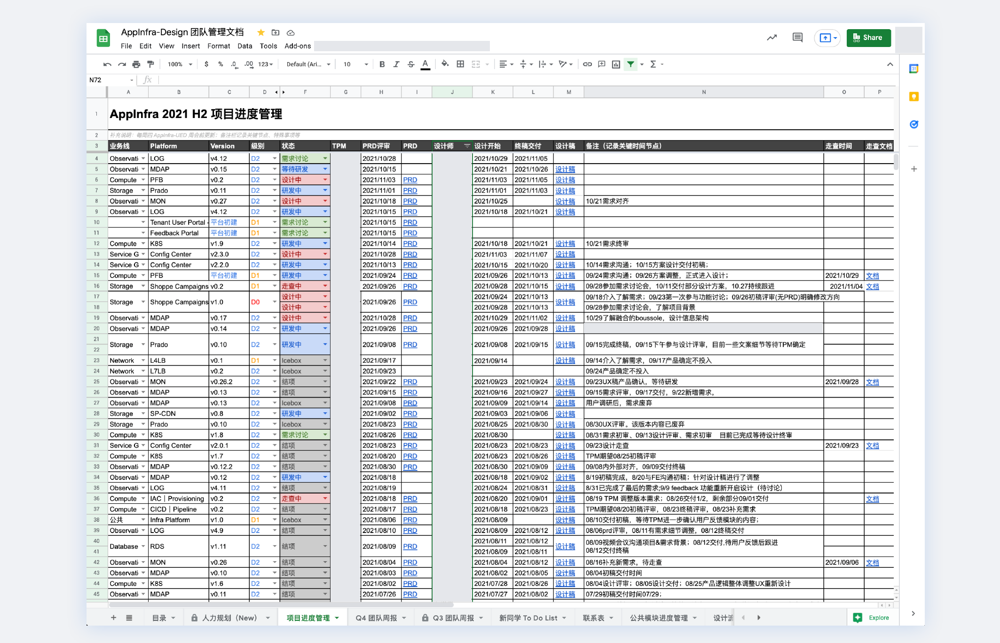

01 / Behind the tool is judgment
The schedule is just a tool
In the 2021 intake and scheduling records, we agreed that partners submit version goals, PRDRecords version goals, feature scope, and acceptance criteria — the input for design scheduling.s, and target dates every Wednesday, and get the design schedule back on Thursday. At root, the schedule is just a tool: the real work is three judgments — judging the size of the request, judging the member's capability, and judging who still has capacity. Requests that can't be scheduled get a separate conversation to adjust.
The calendar held request communication, design, final delivery, WalkthroughWalking a design or deliverable end-to-end to check it matches expectations, re-verifying fixes on the same branch., and shared building. Counting only page-drawing time can't tell you whether someone still has capacity; after a piece of work is delivered, the communication and implementation checks aren't over either.
From unified intake to an executable schedule
Regular intake
Centrally review version goals, PRD, and target dates; make the feedback time clear.
2021 Q3 report · p. 78 'Regular intake' · excerpt

Coordinating the schedule
Put communication, design, delivery, walkthrough, and shared building into one calendar.
2021 Q3 report · p. 80 'Scheduling' · excerpt

From cross-role collaboration to delivery tracking
Stage-based collaboration
Align roles and meetings by Define, Propose, Develop, Rollout stages.
2021 Q3 report · p. 81 collaboration record · excerpt

Following delivery through
Track status against review, design start, final delivery, and walkthrough milestones.
2021 Q3 report · p. 82 project tracking · excerpt

The real effect of this arrangement is that everything has someone following it to the end: when it starts, who it's waiting on, and whether it got a walkthrough after delivery. Following through isn't nagging about progress — it's making sure problems become visible before they become results.
02 / Who's right to take over
Having free time doesn't make someone the right one to take over
At the time we combined fixed ownership with a shared talent pool: members had their own main product line and also supported other requests, to handle peaks. Temporary support has a cost — beyond whether they have time, there's whether they know the domain, and whether switching will interrupt their own work.
Taking on more isn't necessarily better either. Someone who can say "I can go this far, and I need support beyond this" makes the risk visible; someone who can't state their boundary hides the risk in their own hands until it collapses.
I use the product map, design rationale, and InfraDInfra Design System (InfraD), the enterprise infrastructure design system. guides as the entry point into a domain, then discuss the specific trade-offs through co-building modules and design reviews. The project designer owns their own proposal and its progress; professional support should help them form independent judgment step by step.
03 / Three things to hand over
After the handover, someone still has to catch the problems
In 2022 the team moved into Infra, a dedicated Design Manager arrived at the same time, and I stepped back from management to become a product-line lead (PIC — Person In Charge). The demand, staffing, and delivery coordination I'd done earlier as a Dotted-line leadTaking the lead's responsibilities in practice (demand, scheduling, review, delivery) without a matching management title in the formal org. didn't include full formal HR authority; when the role changed, how resources get coordinated and who makes which decisions all had to be re-stated clearly.
Handing a product to the next designer, I'm used to leaving three things: the rationale for the decisions, the business constraints, and the open questions. Only when the person taking over knows what they can decide on their own and what needs coordinating with whom does the work have a chance to keep moving.
The state I worry most about in collaboration is a member pushing forward alone and only revealing problems right before delivery. The mechanism exists to prevent exactly that kind of information silo: risks are updated into the project table before the weekly meeting, blockers get discussed together, and what one person can't carry becomes what everyone can.
Some files reference internal company information; they can be discussed in an interview with sanitized material.